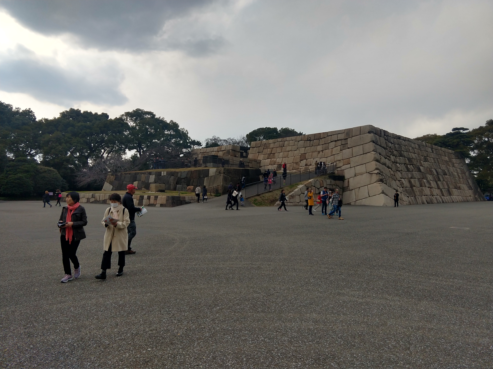
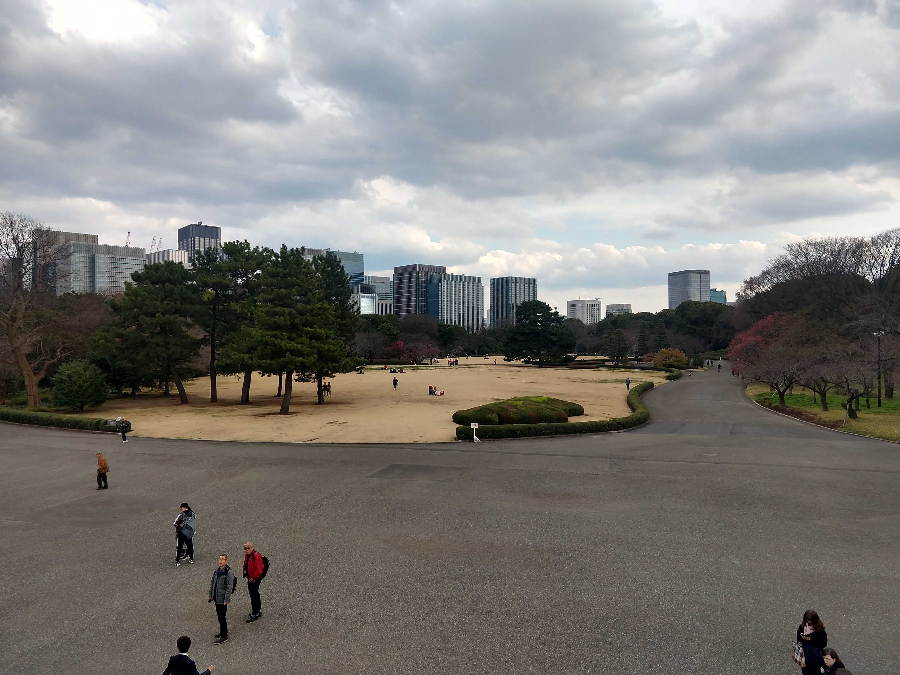
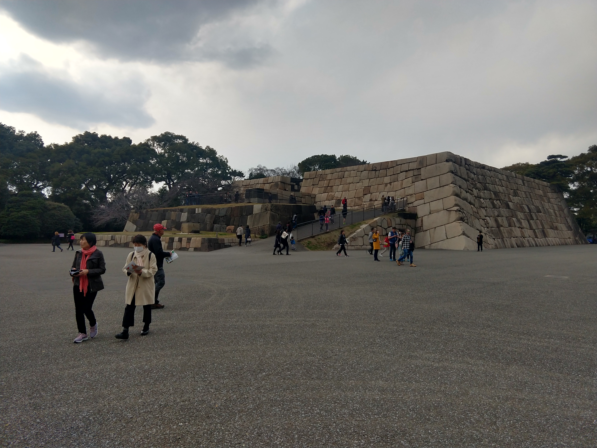
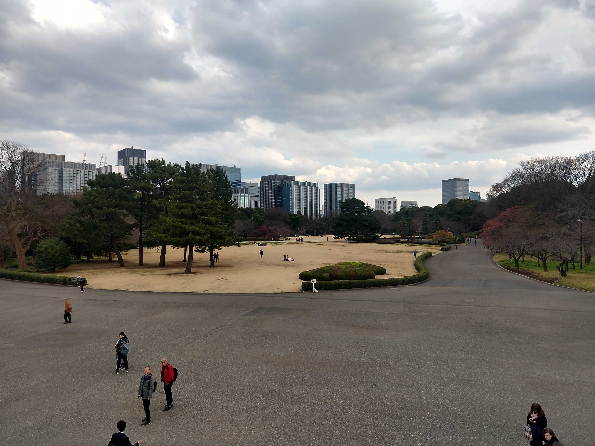

1. Tokyo
Tokyo is the capital of the country of Japan! Of course this place would be number one! But aside from being the capital, what makes this place so great to visit is the things you can see and do while in Tokyo.
Technically, Akihabara is in Tokyo, but it is only one portion of the prefecture. Tokyo, in my opinion, is unlike any other part of Japan. It is like a massive city that you can just immerse yourself into.
This place has everything! From great food, to amusement parks, to even a MASSIVE tower that you can go to the tippy-top and overlook all of Tokyo!
To really, go into detail about what you can do there, I'm going to break it down into a few sections.
I'd say one of the most captivating views I have ever seen is peering out from the glass at the top of Tokyo Tower.
There are two options when visiting Tokyo Tower. There is the Main Deck which is at 150m above Tokyo. This is the option that I chose.


The other option is the Top Deck which is 250m off the ground (100m higher than the main). I did not go to this deck, so I cannot personally speak for it, but I believe it is still an amazing view.
Something else I would recommend visiting is the burial site of the 47 Ronin. It is a very neat place to visit and you can also pay tribute to them by burning incense at their graves. People from all over to visit their graves and pay their respects.


There are so many other things that I could recommend you to see while in Tokyo, but probably my most favorite place that I visited while in Tokyo was the Imperial Palace / Gardens. Believe me when I tell you that this place is BEAUTIFUL.
The gardens are placed throughout a large field inside a moat. There are many photos I'd love to add, but I will do my best to show photos that really capture the beauty of this place.


 


